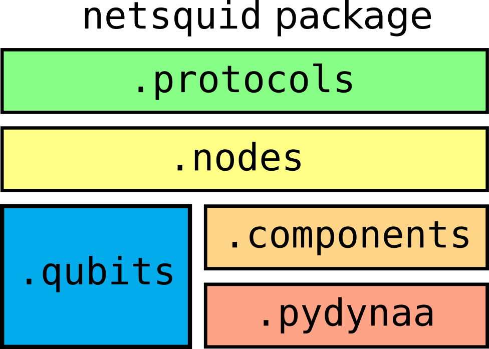

NetSquid package
The NetSquid package consists of several subpackages that stack as:
{kind=link}
The subpackages are documented in the next sections, including example snippets. This documentation is automatically generated using Python docstrings (using the autodoc extension).
Subpackages
- netsquid.qubits
- netsquid.qubits.qformalism
- netsquid.qubits.qubitapi
- netsquid.qubits.operators
caching_enabledOperatorOperator.cacheableOperator.nameOperator.descriptionOperator.num_qubitsOperator.use_sparseOperator.get_cache()Operator.is_cliffordOperator.cliffordOperator.is_unitaryOperator.is_hermitianOperator.is_projectiveOperator.is_realOperator.arrOperator.csrOperator.ctrlOperator.invOperator.conjOperator.eigenketsOperator.eigenvalsOperator.projectors
create_rotation_op()IXYZHKSTCXCCXCZCSSWAPBELL_PROJECTORS
- netsquid.qubits.cliffords
- netsquid.qubits.ketstates
- netsquid.qubits.state_sampler
- netsquid.qubits.qubit
- netsquid.qubits.qstate
QStateQState.combine_qstate()QState.compare()QState.drop_qubit()QState.fidelity()QState.indicesQState.indices_of()QState.log_operation()QState.measure_qubit()QState.multi_operate_qubits()QState.num_qubitsQState.operate_qubits()QState.qreprQState.qubitsQState.reduced_dm()QState.stoch_operate_qubits()
QStateCombineError
- netsquid.qubits.qrepr
QReprQRepr.supports_universalQRepr.supports_mixed_statesQRepr.create_in_basis()QRepr.discard()QRepr.fidelity()QRepr.gmeasure()QRepr.is_validQRepr.log_operation()QRepr.measure()QRepr.measure_discard()QRepr.multi_operate()QRepr.num_qubitsQRepr.operate()QRepr.reduced_dm()QRepr.smart_tensor()QRepr.tensor()
convert_to()register_conversion()deregister_conversion()ConversionError
- netsquid.qubits.kettools
KetReprKetRepr.supports_universalKetRepr.supports_mixed_statesKetRepr.create_in_basis()KetRepr.discard()KetRepr.fidelity()KetRepr.gmeasure()KetRepr.is_validKetRepr.ketKetRepr.log_operation()KetRepr.measure()KetRepr.measure_discard()KetRepr.multi_operate()KetRepr.num_qubitsKetRepr.operate()KetRepr.reduced_dm()KetRepr.smart_tensor()KetRepr.tensor()
- netsquid.qubits.dmtools
DMReprDMRepr.supports_universalDMRepr.supports_mixed_statesDMRepr.create_in_basis()DMRepr.discard()DMRepr.fidelity()DMRepr.gmeasure()DMRepr.is_validDMRepr.log_operation()DMRepr.measure()DMRepr.measure_discard()DMRepr.multi_operate()DMRepr.num_qubitsDMRepr.operate()DMRepr.reduced_dm()DMRepr.smart_tensor()DMRepr.tensor()
DenseDMReprDenseDMRepr.supports_universalDenseDMRepr.supports_mixed_statesDenseDMRepr.create_in_basis()DenseDMRepr.discard()DenseDMRepr.dmDenseDMRepr.fidelity()DenseDMRepr.gmeasure()DenseDMRepr.is_validDenseDMRepr.log_operation()DenseDMRepr.measure()DenseDMRepr.measure_discard()DenseDMRepr.multi_operate()DenseDMRepr.num_qubitsDenseDMRepr.operate()DenseDMRepr.reduced_dm()DenseDMRepr.smart_tensor()DenseDMRepr.tensor()
- netsquid.qubits.sparsedmtools
SparseDMReprSparseDMRepr.supports_universalSparseDMRepr.supports_mixed_statesSparseDMRepr.create_in_basis()SparseDMRepr.discard()SparseDMRepr.fidelity()SparseDMRepr.gmeasure()SparseDMRepr.is_validSparseDMRepr.log_operation()SparseDMRepr.measure()SparseDMRepr.measure_discard()SparseDMRepr.multi_operate()SparseDMRepr.num_qubitsSparseDMRepr.operate()SparseDMRepr.reduced_dm()SparseDMRepr.smart_tensor()SparseDMRepr.sparse_dmSparseDMRepr.tensor()
- netsquid.qubits.stabtools
StabReprStabRepr.supports_universalStabRepr.supports_mixed_statesStabRepr.check_matrixStabRepr.create_in_basis()StabRepr.destab_matrixStabRepr.discard()StabRepr.fidelity()StabRepr.generator_to_matrix()StabRepr.gmeasure()StabRepr.is_validStabRepr.log_operation()StabRepr.measure()StabRepr.measure_discard()StabRepr.multi_operate()StabRepr.multiply_rows()StabRepr.num_qubitsStabRepr.operate()StabRepr.phasesStabRepr.reduced_dm()StabRepr.row_reduce()StabRepr.smart_tensor()StabRepr.tensor()StabRepr.to_basis_state()
clifford_transform()
- netsquid.qubits.gslctools
GSLCReprGSLCRepr.supports_universalGSLCRepr.supports_mixed_statesGSLCRepr.cliffordsGSLCRepr.create_in_basis()GSLCRepr.discard()GSLCRepr.edgesGSLCRepr.fidelity()GSLCRepr.gmeasure()GSLCRepr.is_validGSLCRepr.local_complementation()GSLCRepr.log_operation()GSLCRepr.measure()GSLCRepr.measure_discard()GSLCRepr.measure_qubit()GSLCRepr.multi_operate()GSLCRepr.num_qubitsGSLCRepr.operate()GSLCRepr.operate_CZ()GSLCRepr.operate_qubits()GSLCRepr.reduced_dm()GSLCRepr.smart_tensor()GSLCRepr.swap_indices()GSLCRepr.tensor()
- netsquid.qubits.qreprutil
- netsquid.qubits.ketutil
- netsquid.qubits.dmutil
- netsquid.qubits.sparseutil
dm2sparsedm()sparse_allreal()sparse_allclose()csr_matrix_nocheckreorder_sparse_dm()sparse_trace()sparse_partialtrace()reduced_sparse_dm()sparse_dm_fidelity()is_valid_sparse_dm()is_pure_sparse_dm()sparse_fast_conj()sparse_mul_dense_vector()sparse_mul_dense_matrix()sparse_kron_identity_left()sparse_kron_identity_right()sparse_kron_identity_middle()
- netsquid.qubits.gslcutil
- netsquid.qubits.opmath
- netsquid.components
- netsquid.components.component
MessagePortPort.bind_input_handler()Port.bind_output_handler()Port.componentPort.connect()Port.connected_portPort.disconnect()Port.forward_input()Port.forward_output()Port.forwarded_portsPort.input_queuePort.is_connectedPort.namePort.notify_all_inputPort.notify_all_outputPort.notify_next_inputPort.notify_next_outputPort.output_queuePort.query_meta_input()Port.query_meta_output()Port.remove()Port.reset()Port.rx_input()Port.rx_output()Port.tx_input()Port.tx_output()Port.uid
ComponentComponent.add_ports()Component.add_property()Component.add_subcomponent()Component.has_subcomponent()Component.has_supercomponent()Component.modelsComponent.nameComponent.portsComponent.propertiesComponent.rem_subcomponent()Component.remove()Component.reset()Component.specify_model()Component.subcomponentsComponent.supercomponentComponent.uid
ComponentErrorComponentHierarchyErrorPortErrorPortConnectErrorPortForwardErrorPortBindError
- netsquid.components.channel
ChannelChannel.add_ports()Channel.add_property()Channel.add_subcomponent()Channel.compute_delay()Channel.delay_meanChannel.delay_stdChannel.has_subcomponent()Channel.has_supercomponent()Channel.last_rx_timeChannel.modelsChannel.nameChannel.output_emptyChannel.peek()Channel.portsChannel.postprocess_outputs()Channel.preprocess_inputs()Channel.propertiesChannel.receive()Channel.rem_subcomponent()Channel.remove()Channel.reset()Channel.send()Channel.specify_model()Channel.subcomponentsChannel.supercomponentChannel.transmit_empty_itemsChannel.transmittingChannel.uid
ChannelErrorChannelDelayError
- netsquid.components.qchannel
QuantumChannelQuantumChannel.preprocess_inputs()QuantumChannel.postprocess_outputs()QuantumChannel.add_ports()QuantumChannel.add_property()QuantumChannel.add_subcomponent()QuantumChannel.compute_delay()QuantumChannel.delay_meanQuantumChannel.delay_stdQuantumChannel.has_subcomponent()QuantumChannel.has_supercomponent()QuantumChannel.last_rx_timeQuantumChannel.modelsQuantumChannel.nameQuantumChannel.output_emptyQuantumChannel.peek()QuantumChannel.portsQuantumChannel.propertiesQuantumChannel.receive()QuantumChannel.rem_subcomponent()QuantumChannel.remove()QuantumChannel.reset()QuantumChannel.send()QuantumChannel.specify_model()QuantumChannel.subcomponentsQuantumChannel.supercomponentQuantumChannel.transmit_empty_itemsQuantumChannel.transmittingQuantumChannel.uid
- netsquid.components.cchannel
ClassicalChannelClassicalChannel.classical_codeClassicalChannel.use_classical_codeClassicalChannel.preprocess_inputs()ClassicalChannel.add_ports()ClassicalChannel.add_property()ClassicalChannel.add_subcomponent()ClassicalChannel.compute_delay()ClassicalChannel.delay_meanClassicalChannel.delay_stdClassicalChannel.has_subcomponent()ClassicalChannel.has_supercomponent()ClassicalChannel.last_rx_timeClassicalChannel.modelsClassicalChannel.nameClassicalChannel.output_emptyClassicalChannel.peek()ClassicalChannel.portsClassicalChannel.postprocess_outputs()ClassicalChannel.propertiesClassicalChannel.receive()ClassicalChannel.rem_subcomponent()ClassicalChannel.remove()ClassicalChannel.reset()ClassicalChannel.send()ClassicalChannel.specify_model()ClassicalChannel.subcomponentsClassicalChannel.supercomponentClassicalChannel.transmit_empty_itemsClassicalChannel.transmittingClassicalChannel.uid
- netsquid.components.cqchannel
CombinedChannelCombinedChannel.preprocess_inputs()CombinedChannel.postprocess_outputs()CombinedChannel.send()CombinedChannel.receive()CombinedChannel.add_ports()CombinedChannel.add_property()CombinedChannel.add_subcomponent()CombinedChannel.classical_codeCombinedChannel.compute_delay()CombinedChannel.delay_meanCombinedChannel.delay_stdCombinedChannel.has_subcomponent()CombinedChannel.has_supercomponent()CombinedChannel.last_rx_timeCombinedChannel.modelsCombinedChannel.nameCombinedChannel.output_emptyCombinedChannel.peek()CombinedChannel.portsCombinedChannel.propertiesCombinedChannel.rem_subcomponent()CombinedChannel.remove()CombinedChannel.reset()CombinedChannel.specify_model()CombinedChannel.subcomponentsCombinedChannel.supercomponentCombinedChannel.transmit_empty_itemsCombinedChannel.transmittingCombinedChannel.uidCombinedChannel.use_classical_code
- netsquid.components.qmemory
QuantumMemoryQuantumMemory.add_ports()QuantumMemory.add_property()QuantumMemory.add_subcomponent()QuantumMemory.delta_time()QuantumMemory.discard()QuantumMemory.get_matching_positions()QuantumMemory.get_matching_qubits()QuantumMemory.get_position_empty()QuantumMemory.get_position_used()QuantumMemory.has_subcomponent()QuantumMemory.has_supercomponent()QuantumMemory.measure()QuantumMemory.measure_faulty()QuantumMemory.mem_positionsQuantumMemory.modelsQuantumMemory.nameQuantumMemory.num_positionsQuantumMemory.operate()QuantumMemory.peek()QuantumMemory.pop()QuantumMemory.portsQuantumMemory.propertiesQuantumMemory.put()QuantumMemory.rem_subcomponent()QuantumMemory.remove()QuantumMemory.reset()QuantumMemory.send_signal()QuantumMemory.set_position_used()QuantumMemory.signal()QuantumMemory.specify_model()QuantumMemory.subcomponentsQuantumMemory.supercomponentQuantumMemory.uidQuantumMemory.unused_positionsQuantumMemory.used_positions
MemoryPositionMemoryPosition.add_ports()MemoryPosition.add_property()MemoryPosition.add_subcomponent()MemoryPosition.busyMemoryPosition.busy_event_enabledMemoryPosition.evtype_busy_toggledMemoryPosition.evtype_in_use_toggledMemoryPosition.get_qubit()MemoryPosition.has_subcomponent()MemoryPosition.has_supercomponent()MemoryPosition.in_useMemoryPosition.in_use_event_enabledMemoryPosition.is_emptyMemoryPosition.metaMemoryPosition.modelsMemoryPosition.nameMemoryPosition.portsMemoryPosition.propertiesMemoryPosition.rem_subcomponent()MemoryPosition.remove()MemoryPosition.reset()MemoryPosition.set_qubit()MemoryPosition.specify_model()MemoryPosition.subcomponentsMemoryPosition.supercomponentMemoryPosition.time_last_accessMemoryPosition.uid
QuantumMemoryErrorMemPositionInUseErrorMemPositionEmptyErrorMemPositionBusyError
- netsquid.components.instructions
InstructionIInitISwapIGateIRotationGateIControlledDirectionGateIMeasureIMeasureFaultyIMeasureBellISignalIEmitInstructionErrorINSTR_INITINSTR_SWAPINSTR_UNITARYINSTR_XINSTR_YINSTR_SINSTR_TINSTR_ZINSTR_HINSTR_IINSTR_CXINSTR_CNOTINSTR_CCXINSTR_TOFFOLIINSTR_CSINSTR_CZINSTR_CDIRINSTR_CXDIRINSTR_CYDIRINSTR_CZDIRINSTR_ROTINSTR_ROT_XINSTR_ROT_YINSTR_ROT_ZINSTR_CROTINSTR_CROT_XINSTR_CROT_YINSTR_CROT_ZINSTR_MEASUREINSTR_MEASURE_XINSTR_MEASURE_BELLINSTR_EMITINSTR_SIGNALINSTR_DISCARD
- netsquid.components.qprogram
- netsquid.components.qprocessor
ProcessorStatusQuantumProcessorQuantumProcessor.evtype_program_doneQuantumProcessor.evtype_program_failQuantumProcessor.active_instructions()QuantumProcessor.add_composite_instruction()QuantumProcessor.add_instruction()QuantumProcessor.add_physical_instruction()QuantumProcessor.add_ports()QuantumProcessor.add_property()QuantumProcessor.add_subcomponent()QuantumProcessor.busyQuantumProcessor.delta_time()QuantumProcessor.discard()QuantumProcessor.execute_instruction()QuantumProcessor.execute_program()QuantumProcessor.fail_exceptionQuantumProcessor.fallback_to_nonphysicalQuantumProcessor.get_composite_instruction_decomposition()QuantumProcessor.get_composite_instructions()QuantumProcessor.get_finished_instrs()QuantumProcessor.get_instruction_duration()QuantumProcessor.get_matching_positions()QuantumProcessor.get_matching_qubits()QuantumProcessor.get_physical_instructions()QuantumProcessor.get_position_empty()QuantumProcessor.get_position_used()QuantumProcessor.get_program_duration()QuantumProcessor.has_subcomponent()QuantumProcessor.has_supercomponent()QuantumProcessor.measure()QuantumProcessor.measure_faulty()QuantumProcessor.mem_positionsQuantumProcessor.modelsQuantumProcessor.nameQuantumProcessor.num_positionsQuantumProcessor.operate()QuantumProcessor.peek()QuantumProcessor.pop()QuantumProcessor.portsQuantumProcessor.program_mapping()QuantumProcessor.propertiesQuantumProcessor.put()QuantumProcessor.rem_subcomponent()QuantumProcessor.remove()QuantumProcessor.reset()QuantumProcessor.send_signal()QuantumProcessor.sequence_end_timeQuantumProcessor.set_position_used()QuantumProcessor.set_program_done_callback()QuantumProcessor.set_program_fail_callback()QuantumProcessor.signal()QuantumProcessor.specify_model()QuantumProcessor.statusQuantumProcessor.stop_program()QuantumProcessor.subcomponentsQuantumProcessor.supercomponentQuantumProcessor.uidQuantumProcessor.unused_positionsQuantumProcessor.used_positions
PhysicalIndexPhysicalInstructionPhysicalInstruction.apply_q_noise()PhysicalInstruction.apply_q_noise_afterPhysicalInstruction.classical_noise_modelPhysicalInstruction.durationPhysicalInstruction.instr_paramsPhysicalInstruction.instructionPhysicalInstruction.parallelPhysicalInstruction.quantum_noise_modelPhysicalInstruction.topology
ProcessorErrorProcessorBusyErrorProgramMappingErrorMissingInstructionErrornetsquid.components.qprocessor.error_on_program_failnetsquid.components.qprocessor.nv_super_instructions
- netsquid.components.clock
ClockClock.frequencyClock.is_runningClock.num_ticksClock.get_period()Clock.start()Clock.stop()Clock.reset()Clock.add_ports()Clock.add_property()Clock.add_subcomponent()Clock.has_subcomponent()Clock.has_supercomponent()Clock.modelsClock.nameClock.portsClock.propertiesClock.rem_subcomponent()Clock.remove()Clock.specify_model()Clock.subcomponentsClock.supercomponentClock.uid
- netsquid.components.qsource
SourceStatusQSourceQSource.add_ports()QSource.add_property()QSource.add_subcomponent()QSource.frequencyQSource.has_subcomponent()QSource.has_supercomponent()QSource.modelsQSource.nameQSource.output_metaQSource.periodQSource.portsQSource.prep_delayQSource.propertiesQSource.rem_subcomponent()QSource.remove()QSource.reset()QSource.specify_model()QSource.state_samplerQSource.statusQSource.subcomponentsQSource.supercomponentQSource.trigger()QSource.uid
- netsquid.components.qdetector
QuantumDetectorQuantumDetector.add_ports()QuantumDetector.add_property()QuantumDetector.add_subcomponent()QuantumDetector.finish()QuantumDetector.has_subcomponent()QuantumDetector.has_supercomponent()QuantumDetector.in_dead_timeQuantumDetector.inform()QuantumDetector.input_port_namesQuantumDetector.is_triggeredQuantumDetector.measure()QuantumDetector.modelsQuantumDetector.nameQuantumDetector.output_port_namesQuantumDetector.portsQuantumDetector.postprocess_outputs()QuantumDetector.preprocess_inputs()QuantumDetector.propertiesQuantumDetector.rem_subcomponent()QuantumDetector.remove()QuantumDetector.reset()QuantumDetector.set_input_models()QuantumDetector.set_output_models()QuantumDetector.specify_model()QuantumDetector.subcomponentsQuantumDetector.supercomponentQuantumDetector.trigger()QuantumDetector.uid
GatedQuantumDetectorGatedQuantumDetector.add_ports()GatedQuantumDetector.add_property()GatedQuantumDetector.add_subcomponent()GatedQuantumDetector.finish()GatedQuantumDetector.has_subcomponent()GatedQuantumDetector.has_supercomponent()GatedQuantumDetector.in_dead_timeGatedQuantumDetector.inform()GatedQuantumDetector.input_port_namesGatedQuantumDetector.is_triggeredGatedQuantumDetector.measure()GatedQuantumDetector.modelsGatedQuantumDetector.nameGatedQuantumDetector.output_port_namesGatedQuantumDetector.portsGatedQuantumDetector.postprocess_outputs()GatedQuantumDetector.preprocess_inputs()GatedQuantumDetector.propertiesGatedQuantumDetector.rem_subcomponent()GatedQuantumDetector.remove()GatedQuantumDetector.reset()GatedQuantumDetector.set_input_models()GatedQuantumDetector.set_output_models()GatedQuantumDetector.specify_model()GatedQuantumDetector.subcomponentsGatedQuantumDetector.supercomponentGatedQuantumDetector.trigger()GatedQuantumDetector.uid
QuantumDetectorError
- netsquid.components.switch
SwitchSwitch.add_ports()Switch.routing_table()Switch.add_property()Switch.add_subcomponent()Switch.has_subcomponent()Switch.has_supercomponent()Switch.modelsSwitch.nameSwitch.portsSwitch.propertiesSwitch.rem_subcomponent()Switch.remove()Switch.reset()Switch.specify_model()Switch.subcomponentsSwitch.supercomponentSwitch.uid
SimpleSwitchSimpleSwitch.topologySimpleSwitch.routing_table()SimpleSwitch.add_ports()SimpleSwitch.add_property()SimpleSwitch.add_subcomponent()SimpleSwitch.has_subcomponent()SimpleSwitch.has_supercomponent()SimpleSwitch.modelsSimpleSwitch.nameSimpleSwitch.portsSimpleSwitch.propertiesSimpleSwitch.rem_subcomponent()SimpleSwitch.remove()SimpleSwitch.reset()SimpleSwitch.specify_model()SimpleSwitch.subcomponentsSimpleSwitch.supercomponentSimpleSwitch.uid
SwitchError
- netsquid.components.ccoding
- netsquid.components.component
- netsquid.components.models
- netsquid.components.models.model
- netsquid.components.models.delaymodels
DelayModelFixedDelayModelFixedDelayModel.delayFixedDelayModel.get_mean()FixedDelayModel.set_mean()FixedDelayModel.get_std()FixedDelayModel.generate_delay()FixedDelayModel.add_property()FixedDelayModel.compute_model()FixedDelayModel.concatenation_class()FixedDelayModel.is_concatenatedFixedDelayModel.propertiesFixedDelayModel.required_propertiesFixedDelayModel.rngFixedDelayModel.validate()
GaussianDelayModelGaussianDelayModel.delay_meanGaussianDelayModel.delay_stdGaussianDelayModel.get_mean()GaussianDelayModel.set_mean()GaussianDelayModel.get_std()GaussianDelayModel.generate_delay()GaussianDelayModel.add_property()GaussianDelayModel.compute_model()GaussianDelayModel.concatenation_class()GaussianDelayModel.is_concatenatedGaussianDelayModel.propertiesGaussianDelayModel.required_propertiesGaussianDelayModel.rngGaussianDelayModel.validate()
FibreDelayModelFibreDelayModel.required_propertiesFibreDelayModel.add_property()FibreDelayModel.cFibreDelayModel.compute_model()FibreDelayModel.concatenation_class()FibreDelayModel.is_concatenatedFibreDelayModel.propertiesFibreDelayModel.rngFibreDelayModel.validate()FibreDelayModel.get_mean()FibreDelayModel.set_mean()FibreDelayModel.get_std()FibreDelayModel.generate_delay()
- netsquid.components.models.errormodels
- netsquid.componentsmodels.qerrormodels
QuantumErrorModelQuantumErrorModel.error_operation()QuantumErrorModel.compute_model()QuantumErrorModel.lose_qubit()QuantumErrorModel.concatenation_class()QuantumErrorModel.add_property()QuantumErrorModel.is_concatenatedQuantumErrorModel.propertiesQuantumErrorModel.required_propertiesQuantumErrorModel.validate()
DepolarNoiseModelDepolarNoiseModel.depolar_rateDepolarNoiseModel.time_independentDepolarNoiseModel.error_operation()DepolarNoiseModel.add_property()DepolarNoiseModel.compute_model()DepolarNoiseModel.concatenation_class()DepolarNoiseModel.is_concatenatedDepolarNoiseModel.lose_qubit()DepolarNoiseModel.propertiesDepolarNoiseModel.required_propertiesDepolarNoiseModel.validate()
DephaseNoiseModelDephaseNoiseModel.dephase_rateDephaseNoiseModel.time_independentDephaseNoiseModel.error_operation()DephaseNoiseModel.add_property()DephaseNoiseModel.compute_model()DephaseNoiseModel.concatenation_class()DephaseNoiseModel.is_concatenatedDephaseNoiseModel.lose_qubit()DephaseNoiseModel.propertiesDephaseNoiseModel.required_propertiesDephaseNoiseModel.validate()
T1T2NoiseModelT1T2NoiseModel.T1T1T2NoiseModel.T2T1T2NoiseModel.error_operation()T1T2NoiseModel.apply_noise()T1T2NoiseModel.add_property()T1T2NoiseModel.compute_model()T1T2NoiseModel.concatenation_class()T1T2NoiseModel.is_concatenatedT1T2NoiseModel.lose_qubit()T1T2NoiseModel.propertiesT1T2NoiseModel.required_propertiesT1T2NoiseModel.validate()
FibreLossModelFibreLossModel.add_property()FibreLossModel.compute_model()FibreLossModel.concatenation_class()FibreLossModel.is_concatenatedFibreLossModel.lose_qubit()FibreLossModel.propertiesFibreLossModel.validate()FibreLossModel.required_propertiesFibreLossModel.rngFibreLossModel.p_loss_initFibreLossModel.p_loss_lengthFibreLossModel.error_operation()
- netsquid.components.models.cerrormodels
- netsquid.nodes
- netsquid.nodes.node
NodeNode.nameNode.IDNode.cdataNode.connection_port_name()Node.connect_to()Node.add_ports()Node.add_property()Node.has_subcomponent()Node.has_supercomponent()Node.modelsNode.portsNode.propertiesNode.rem_subcomponent()Node.remove()Node.specify_model()Node.subcomponentsNode.supercomponentNode.uidNode.get_conn_port()Node.reset()Node.qmemoryNode.add_subcomponent()
- netsquid.nodes.connections
ConnectionConnection.port_AConnection.port_BConnection.add_ports()Connection.add_property()Connection.add_subcomponent()Connection.has_subcomponent()Connection.has_supercomponent()Connection.modelsConnection.nameConnection.portsConnection.propertiesConnection.rem_subcomponent()Connection.remove()Connection.reset()Connection.specify_model()Connection.subcomponentsConnection.supercomponentConnection.uid
DirectConnectionDirectConnection.add_ports()DirectConnection.add_property()DirectConnection.add_subcomponent()DirectConnection.has_subcomponent()DirectConnection.has_supercomponent()DirectConnection.modelsDirectConnection.nameDirectConnection.port_ADirectConnection.port_BDirectConnection.portsDirectConnection.propertiesDirectConnection.rem_subcomponent()DirectConnection.remove()DirectConnection.reset()DirectConnection.specify_model()DirectConnection.subcomponentsDirectConnection.supercomponentDirectConnection.uidDirectConnection.channel_AtoBDirectConnection.channel_BtoA
- netsquid.nodes.network
- netsquid.nodes.node
- netsquid.protocols
- netsquid.protocols.protocol
ProtocolProtocol.add_signal()Protocol.add_subprotocol()Protocol.await_mempos_busy_toggle()Protocol.await_mempos_in_use_toggle()Protocol.await_port_input()Protocol.await_port_output()Protocol.await_program()Protocol.await_signal()Protocol.await_timer()Protocol.can_signal_to()Protocol.check_assigned()Protocol.get_signal_by_event()Protocol.get_signal_result()Protocol.is_connectedProtocol.is_runningProtocol.nameProtocol.remove()Protocol.reset()Protocol.run()Protocol.send_signal()Protocol.signalsProtocol.start()Protocol.start_subprotocols()Protocol.stop()Protocol.subprotocolsProtocol.uid
SignalsSignalResult
- netsquid.protocols.nodeprotocols
- netsquid.protocols.serviceprotocol
ServiceProtocolServiceProtocol.get_name()ServiceProtocol.request_typesServiceProtocol.response_typesServiceProtocol.request_handlersServiceProtocol.register_response()ServiceProtocol.register_request()ServiceProtocol.put()ServiceProtocol.handle_request()ServiceProtocol.send_response()ServiceProtocol.add_signal()ServiceProtocol.add_subprotocol()ServiceProtocol.await_mempos_busy_toggle()ServiceProtocol.await_mempos_in_use_toggle()ServiceProtocol.await_port_input()ServiceProtocol.await_port_output()ServiceProtocol.await_program()ServiceProtocol.await_signal()ServiceProtocol.await_timer()ServiceProtocol.can_signal_to()ServiceProtocol.check_assigned()ServiceProtocol.get_signal_by_event()ServiceProtocol.get_signal_result()ServiceProtocol.is_connectedServiceProtocol.is_runningServiceProtocol.max_nodesServiceProtocol.nameServiceProtocol.nodeServiceProtocol.nodesServiceProtocol.remove()ServiceProtocol.reset()ServiceProtocol.run()ServiceProtocol.send_signal()ServiceProtocol.signalsServiceProtocol.specify_node()ServiceProtocol.start()ServiceProtocol.start_subprotocols()ServiceProtocol.stop()ServiceProtocol.subprotocolsServiceProtocol.uid
ServiceError
- netsquid.protocols.protocol
- netsquid.util
- netsquid.util.simtools
- netsquid.util.simlog
- netsquid.util.simstats
- netsquid.util.datacollector
- netsquid.util.cycache
- netsquid.util.cymath
- netsquid.util.constrainedmap
- netsquid.examples
- netsquid.examples.teleportation
EntanglingConnectionEntanglingConnection.add_ports()EntanglingConnection.add_property()EntanglingConnection.add_subcomponent()EntanglingConnection.has_subcomponent()EntanglingConnection.has_supercomponent()EntanglingConnection.modelsEntanglingConnection.nameEntanglingConnection.port_AEntanglingConnection.port_BEntanglingConnection.portsEntanglingConnection.propertiesEntanglingConnection.rem_subcomponent()EntanglingConnection.remove()EntanglingConnection.reset()EntanglingConnection.specify_model()EntanglingConnection.subcomponentsEntanglingConnection.supercomponentEntanglingConnection.uid
ClassicalConnectionClassicalConnection.add_ports()ClassicalConnection.add_property()ClassicalConnection.add_subcomponent()ClassicalConnection.has_subcomponent()ClassicalConnection.has_supercomponent()ClassicalConnection.modelsClassicalConnection.nameClassicalConnection.port_AClassicalConnection.port_BClassicalConnection.portsClassicalConnection.propertiesClassicalConnection.rem_subcomponent()ClassicalConnection.remove()ClassicalConnection.reset()ClassicalConnection.specify_model()ClassicalConnection.subcomponentsClassicalConnection.supercomponentClassicalConnection.uid
InitStateProgramBellMeasurementProgramBellMeasurementProtocolBellMeasurementProtocol.run()BellMeasurementProtocol.add_signal()BellMeasurementProtocol.add_subprotocol()BellMeasurementProtocol.await_mempos_busy_toggle()BellMeasurementProtocol.await_mempos_in_use_toggle()BellMeasurementProtocol.await_port_input()BellMeasurementProtocol.await_port_output()BellMeasurementProtocol.await_program()BellMeasurementProtocol.await_signal()BellMeasurementProtocol.await_timer()BellMeasurementProtocol.can_signal_to()BellMeasurementProtocol.check_assigned()BellMeasurementProtocol.get_signal_by_event()BellMeasurementProtocol.get_signal_result()BellMeasurementProtocol.is_connectedBellMeasurementProtocol.is_runningBellMeasurementProtocol.max_nodesBellMeasurementProtocol.nameBellMeasurementProtocol.nodeBellMeasurementProtocol.nodesBellMeasurementProtocol.remove()BellMeasurementProtocol.reset()BellMeasurementProtocol.send_signal()BellMeasurementProtocol.signalsBellMeasurementProtocol.specify_node()BellMeasurementProtocol.start()BellMeasurementProtocol.start_subprotocols()BellMeasurementProtocol.stop()BellMeasurementProtocol.subprotocolsBellMeasurementProtocol.uid
CorrectionProtocolCorrectionProtocol.run()CorrectionProtocol.add_signal()CorrectionProtocol.add_subprotocol()CorrectionProtocol.await_mempos_busy_toggle()CorrectionProtocol.await_mempos_in_use_toggle()CorrectionProtocol.await_port_input()CorrectionProtocol.await_port_output()CorrectionProtocol.await_program()CorrectionProtocol.await_signal()CorrectionProtocol.await_timer()CorrectionProtocol.can_signal_to()CorrectionProtocol.check_assigned()CorrectionProtocol.get_signal_by_event()CorrectionProtocol.get_signal_result()CorrectionProtocol.is_connectedCorrectionProtocol.is_runningCorrectionProtocol.max_nodesCorrectionProtocol.nameCorrectionProtocol.nodeCorrectionProtocol.nodesCorrectionProtocol.remove()CorrectionProtocol.reset()CorrectionProtocol.send_signal()CorrectionProtocol.signalsCorrectionProtocol.specify_node()CorrectionProtocol.start()CorrectionProtocol.start_subprotocols()CorrectionProtocol.stop()CorrectionProtocol.subprotocolsCorrectionProtocol.uid
create_processor()example_network_setup()example_sim_setup()run_experiment()create_plot()
- netsquid.examples.entanglenodes
EntangleNodesEntangleNodes.start()EntangleNodes.stop()EntangleNodes.run()EntangleNodes.is_connectedEntangleNodes.add_signal()EntangleNodes.add_subprotocol()EntangleNodes.await_mempos_busy_toggle()EntangleNodes.await_mempos_in_use_toggle()EntangleNodes.await_port_input()EntangleNodes.await_port_output()EntangleNodes.await_program()EntangleNodes.await_signal()EntangleNodes.await_timer()EntangleNodes.can_signal_to()EntangleNodes.check_assigned()EntangleNodes.get_signal_by_event()EntangleNodes.get_signal_result()EntangleNodes.is_runningEntangleNodes.max_nodesEntangleNodes.nameEntangleNodes.nodeEntangleNodes.nodesEntangleNodes.remove()EntangleNodes.reset()EntangleNodes.send_signal()EntangleNodes.signalsEntangleNodes.specify_node()EntangleNodes.start_subprotocols()EntangleNodes.subprotocolsEntangleNodes.uid
example_network_setup()
- netsquid.examples.purify
FilterFilter.meas_opsFilter.run()Filter.start()Filter.stop()Filter.is_connectedFilter.add_signal()Filter.add_subprotocol()Filter.await_mempos_busy_toggle()Filter.await_mempos_in_use_toggle()Filter.await_port_input()Filter.await_port_output()Filter.await_program()Filter.await_signal()Filter.await_timer()Filter.can_signal_to()Filter.check_assigned()Filter.get_signal_by_event()Filter.get_signal_result()Filter.is_runningFilter.max_nodesFilter.nameFilter.nodeFilter.nodesFilter.remove()Filter.reset()Filter.send_signal()Filter.signalsFilter.specify_node()Filter.start_subprotocols()Filter.subprotocolsFilter.uid
DistilDistil.run()Distil.start()Distil.is_connectedDistil.add_signal()Distil.add_subprotocol()Distil.await_mempos_busy_toggle()Distil.await_mempos_in_use_toggle()Distil.await_port_input()Distil.await_port_output()Distil.await_program()Distil.await_signal()Distil.await_timer()Distil.can_signal_to()Distil.check_assigned()Distil.get_signal_by_event()Distil.get_signal_result()Distil.is_runningDistil.max_nodesDistil.nameDistil.nodeDistil.nodesDistil.remove()Distil.reset()Distil.send_signal()Distil.signalsDistil.specify_node()Distil.start_subprotocols()Distil.stop()Distil.subprotocolsDistil.uid
FilteringExampleFilteringExample.resultsFilteringExample.run()FilteringExample.add_signal()FilteringExample.add_subprotocol()FilteringExample.await_mempos_busy_toggle()FilteringExample.await_mempos_in_use_toggle()FilteringExample.await_port_input()FilteringExample.await_port_output()FilteringExample.await_program()FilteringExample.await_signal()FilteringExample.await_timer()FilteringExample.can_signal_to()FilteringExample.check_assigned()FilteringExample.get_signal_by_event()FilteringExample.get_signal_result()FilteringExample.is_connectedFilteringExample.is_runningFilteringExample.max_nodesFilteringExample.nameFilteringExample.nodesFilteringExample.remove()FilteringExample.reset()FilteringExample.send_signal()FilteringExample.signalsFilteringExample.specify_node()FilteringExample.start()FilteringExample.start_subprotocols()FilteringExample.stop()FilteringExample.subprotocolsFilteringExample.uid
example_network_setup()example_sim_setup()
- netsquid.examples.repeater
RepeaterRepeater.run()Repeater.is_connectedRepeater.add_signal()Repeater.add_subprotocol()Repeater.await_mempos_busy_toggle()Repeater.await_mempos_in_use_toggle()Repeater.await_port_input()Repeater.await_port_output()Repeater.await_program()Repeater.await_signal()Repeater.await_timer()Repeater.can_signal_to()Repeater.check_assigned()Repeater.get_signal_by_event()Repeater.get_signal_result()Repeater.is_runningRepeater.max_nodesRepeater.nameRepeater.nodeRepeater.nodesRepeater.remove()Repeater.reset()Repeater.send_signal()Repeater.signalsRepeater.specify_node()Repeater.start()Repeater.start_subprotocols()Repeater.stop()Repeater.subprotocolsRepeater.uid
RepeaterExampleRepeaterExample.run()RepeaterExample.add_signal()RepeaterExample.add_subprotocol()RepeaterExample.await_mempos_busy_toggle()RepeaterExample.await_mempos_in_use_toggle()RepeaterExample.await_port_input()RepeaterExample.await_port_output()RepeaterExample.await_program()RepeaterExample.await_signal()RepeaterExample.await_timer()RepeaterExample.can_signal_to()RepeaterExample.check_assigned()RepeaterExample.get_signal_by_event()RepeaterExample.get_signal_result()RepeaterExample.is_connectedRepeaterExample.is_runningRepeaterExample.max_nodesRepeaterExample.nameRepeaterExample.nodesRepeaterExample.remove()RepeaterExample.reset()RepeaterExample.send_signal()RepeaterExample.signalsRepeaterExample.specify_node()RepeaterExample.start()RepeaterExample.start_subprotocols()RepeaterExample.stop()RepeaterExample.subprotocolsRepeaterExample.uid
example_network_setup()example_sim_setup()
- netsquid.examples.repeater_chain
SwapProtocolSwapProtocol.run()SwapProtocol.add_signal()SwapProtocol.add_subprotocol()SwapProtocol.await_mempos_busy_toggle()SwapProtocol.await_mempos_in_use_toggle()SwapProtocol.await_port_input()SwapProtocol.await_port_output()SwapProtocol.await_program()SwapProtocol.await_signal()SwapProtocol.await_timer()SwapProtocol.can_signal_to()SwapProtocol.check_assigned()SwapProtocol.get_signal_by_event()SwapProtocol.get_signal_result()SwapProtocol.is_connectedSwapProtocol.is_runningSwapProtocol.max_nodesSwapProtocol.nameSwapProtocol.nodeSwapProtocol.nodesSwapProtocol.remove()SwapProtocol.reset()SwapProtocol.send_signal()SwapProtocol.signalsSwapProtocol.specify_node()SwapProtocol.start()SwapProtocol.start_subprotocols()SwapProtocol.stop()SwapProtocol.subprotocolsSwapProtocol.uid
SwapCorrectProgramCorrectProtocolCorrectProtocol.run()CorrectProtocol.add_signal()CorrectProtocol.add_subprotocol()CorrectProtocol.await_mempos_busy_toggle()CorrectProtocol.await_mempos_in_use_toggle()CorrectProtocol.await_port_input()CorrectProtocol.await_port_output()CorrectProtocol.await_program()CorrectProtocol.await_signal()CorrectProtocol.await_timer()CorrectProtocol.can_signal_to()CorrectProtocol.check_assigned()CorrectProtocol.get_signal_by_event()CorrectProtocol.get_signal_result()CorrectProtocol.is_connectedCorrectProtocol.is_runningCorrectProtocol.max_nodesCorrectProtocol.nameCorrectProtocol.nodeCorrectProtocol.nodesCorrectProtocol.remove()CorrectProtocol.reset()CorrectProtocol.send_signal()CorrectProtocol.signalsCorrectProtocol.specify_node()CorrectProtocol.start()CorrectProtocol.start_subprotocols()CorrectProtocol.stop()CorrectProtocol.subprotocolsCorrectProtocol.uid
FibreDepolarizeModelFibreDepolarizeModel.required_propertiesFibreDepolarizeModel.error_operation()FibreDepolarizeModel.add_property()FibreDepolarizeModel.compute_model()FibreDepolarizeModel.concatenation_class()FibreDepolarizeModel.is_concatenatedFibreDepolarizeModel.lose_qubit()FibreDepolarizeModel.propertiesFibreDepolarizeModel.validate()
create_qprocessor()setup_network()setup_repeater_protocol()setup_datacollector()run_simulation()create_plot()
- netsquid.examples.simple_link
- netsquid.examples.magic_simple_link
- netsquid.examples.teleportation